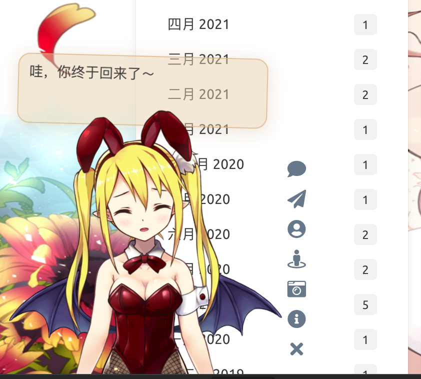
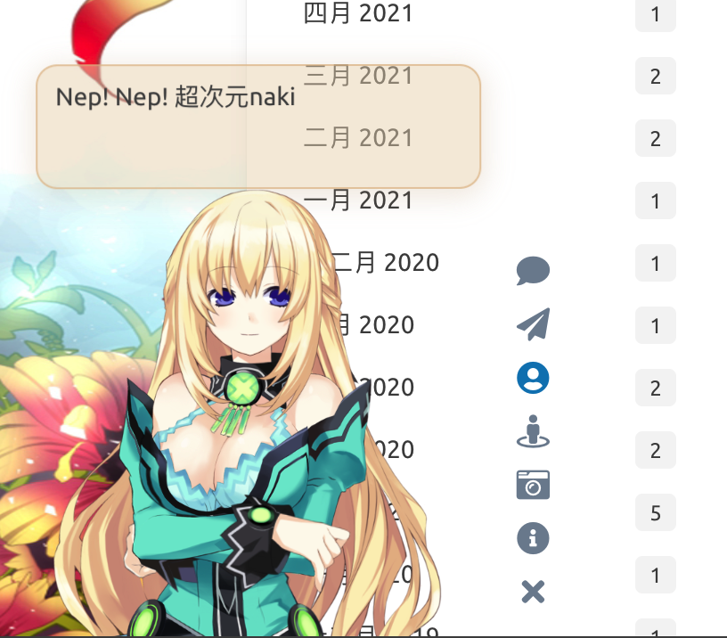
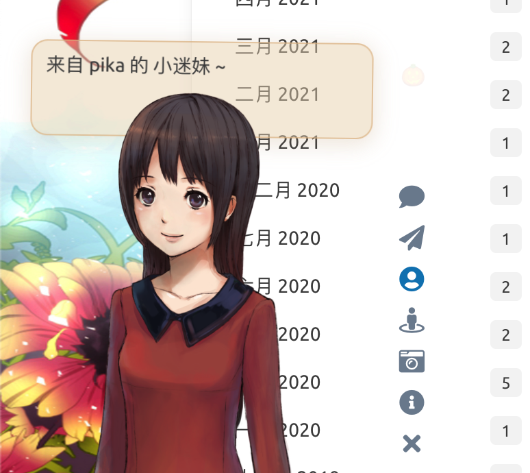

本仓库根据stevenjoezhang改动而来，原项目部分模型皮肤展示不全，此项目还加入几个新的角色模型。
在网页中添加 Live2D 看板娘。兼容 PJAX，支持无刷新加载。
Add Live2D widget to web page. Compatible with PJAX.
警告：本项目使用了大量 ES6 语法，不支持 IE 11 等老旧浏览器。
WARNING: This project does not support legacy browsers such as IE 11.
在pika的博客的可查看效果。鼠标点击人物时，部分人物带有语言互动。



本插件需要 Font Awesome (v4 或 v5) 图标支持，请确保相关样式表已在页面中加载。以 Font Awesome v4 为例，请在 <head> 中加入：
Font Awesome (v4 or v5) is required for this plugin. Take Font Awesome v4 as an example, please add the following in <head>:
<link rel="stylesheet" href="https://cdn.jsdelivr.net/npm/font-awesome/css/font-awesome.min.css">
否则图标将无法正常显示。（如果网页中已经加载了任何版本的 Font Awesome，就不要重复加载了）
将这一行代码加入 <head> 或 <body>，即可展现出效果：
<script src="./live2d/autoload.js"></script>
如果网站启用了 PJAX，由于看板娘不必每页刷新，因此要注意将相关脚本放到 PJAX 刷新区域之外。
换句话说，如果你是小白，或者只需要最基础的功能，就只用把这一行代码，连同前面加载 Font Awesome 的一行代码，一起放到 html 的 <head> 中即可。
对于用各种模版引擎（例如 Nunjucks，Jinja 或者 PHP）生成的页面，也要自行修改，方法类似，只是可能略为麻烦。以 Hexo 为例，需要在主题相关的 ejs 或 njk 模版中正确配置路径，才可以加载。
此项目基于我自己的静态博客修改而来，不能直接开箱即用，建议自己拷贝一份DIY。我们强烈推荐自己进行配置，否则很多功能是不完整的，并且可能产生问题！**
如果你有兴趣自己折腾的话，请看下面的详细说明。
你也可以直接把这些角色资源文件放到自己服务器上。或者使用上一个作者的提供的CDN。再次说明，本项目基于原作者的项目修改而来。自己目前并不打算将它做得像原作者一样的开箱即用，如果喜欢此项目某些角色，自取便可。
initWidget 方法接受名为 apiPath 和 cdnPath 的参数，两者设置其中一项即可。其中 apiPath 为后端 API 的 URL，可以自行搭建，并增加模型（需要修改的内容比较多，此处不再赘述）。而 cdnPath 则是通过 jsDelivr 这样的 CDN 服务加载资源，更加稳定。
waifu-tips.js 包含了按钮和对话框的逻辑；waifu-tips.json 中定义了触发条件（selector，CSS 选择器）和触发时显示的文字（text）；waifu.css 是看板娘的样式表。源文件是对 Hexo 的 NexT 主题有效的，为了适用于你自己的网页，可能需要自行修改，或增加新内容。
警告：作者不对包括但不限于 waifu-tips.js 和 waifu-tips.json 文件中的内容负责，请自行确保它们是合适的。
如果有任何疑问，欢迎提 Issue。如果有任何修改建议，欢迎提 Pull Request。
点击看板娘的纸飞机按钮时，会出现一个彩蛋，这来自于 WebsiteAsteroids。
更多内容可以参考：
https://imjad.cn/archives/lab/add-dynamic-poster-girl-with-live2d-to-your-blog-02
https://github.com/xiazeyu/live2d-widget.js
https://github.com/summerscar/live2dDemo
关于后端 API 模型：
https://github.com/fghrsh/live2d_api
https://github.com/xiazeyu/live2d-widget-models
https://github.com/xiaoski/live2d_models_collection
除此之外，还有桌面版本：
https://github.com/amorist/platelet
https://github.com/akiroz/Live2D-Widget
https://github.com/zenghongtu/PPet
https://github.com/LikeNeko/L2dPetForMac
以及 Wallpaper Engine：
https://github.com/guansss/nep-live2d
本仓库并不包含任何模型，用作展示的所有 Live2D 模型、图片、动作数据等版权均属于其原作者，仅供研究学习，不得用于商业用途。
Live2D 官方网站：
https://www.live2d.com/en/
https://live2d.github.io
Live2D Cubism Core は Live2D Proprietary Software License で提供しています。
https://www.live2d.com/eula/live2d-proprietary-software-license-agreement_en.html
Live2D Cubism Components は Live2D Open Software License で提供しています。
http://www.live2d.com/eula/live2d-open-software-license-agreement_en.html
The terms and conditions do prohibit modification, but obfuscating in
live2d.min.jswould not be considered illegal modification.
https://community.live2d.com/discussion/140/webgl-developer-licence-and-javascript-question